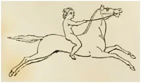

Единого мнения о происхождении термина хеландий не существует. Поэтому оценим имеющиеся варианты и выберем из них наиболее достоверные.
Прежде всего остановимся на том, с чем согласно большинство исследователей: все множество названий для корабля хеландий на всех языках произошло от греческого χελάνδιον или χελάνδρα . Не касаясь пока эволюции термина на других языках, сосредоточимся на греческом термине. Сделаем предварительно одно небольшое замечание. Использование в текстах того времени уменьшительных значений от дромона и хеландия ( dromōnion , chelandion) не имело особого смыслового значения. Оно просто использовалось как производный синоним для dromōn и chelandia, что являлось общепринятой практикой в византийском греческом (J. Pryor).
В классическом греческом языке термина χελάνδιον нет. Первое его появление, как мы уже отмечали, относится к началу IX века («Хронография» Феофана Исповедника). В предыдущих заметках мы пытались проследить эволюцию этого термина, но складной картины не получили. Это объясняется тем, что от периода византийской истории с конца VII до середины IX в. осталось мало источников:
«Почти полностью отсутствуют акты и подлинные документы. Сравнительно невелико количество сохранившихся монет. Почти совершенно нет архитектурных памятников того времени. Археологический материал, отражающий этот период, тоже крайне беден.»
(«История Византии», т.II, М.,1967, с.7)
Следовательно, все попытки восстановить возникновение термина хеландий имеют характер гипотез и отдать предпочтение какой-либо из них можно только опираясь на здравый смысл.
Дж.Ф. Занетти («Della origine di alcune arti principali appresso i Veneziani» (1841 г.)), считавший, что хеландий – это двухпалубное судно, решил, что верхняя палуба напоминает панцирь черепахи (по-гречески χέλυς - chelys), отсюда и χελάνδρα. Эта этимология формально лучше других, которые предполагают переход χ -> κ , однако в корне противоречит образу такого быстроходного корабля, как хеландий. Кроме того, исходя из подобной логики можно было бы назвать «черепахами» все двухпалубные корабли.
Второй вариант вроде бы такого недостатка не имеет. Он распространен достаточно широко. Вот как это выглядит у комментатора И. С. Чичурова, которого мы упоминали выше:
« Хеландий (от греч. γχελυς/χέλυς — «угорь», что подчеркивает продолговатость форм) — тяжелый военный корабль; термин появился в византийский период и заменил собой στρατιώτης ναῦς и триэру античного времени; судно вмещало 100 гребцов и 200 человек экипажа; хеландий, вероятно, тождествен дромону».
Еще один вариант предлагает Огюстен Жаль в своем «Морском словаре». Критикуя отождествление хеландия с черепахой, в словарной статье «χελανδiον» он пишет, что значительно больше сходства между хеландием и ласточкой, чем черепахой, и предлагает вариант происхождения названия этого корабля от греческого слова Χελιδών (chelidōn) – «ласточка», которое «от искажения к искажению» превратилось в Χελάνδιον (chelandion).
Я с таким же успехом могу выдвинуть гипотезу, что хеландий произошел от греческого названия летучей рыбы, написание которой также Χελιδών (chelidōn).
Наибольшие шансы, пожалуй, имеет вариант, связывающий название хеландия со скаковой лошадью. Вот как об этом пишет проф. J. H. Pryor:
«Это слово наверняка произошло от κέλης (kelēs), что означает «беговая лошадь», «рысак». Этот термин применялся как по отношению к быстроходным гребным судам с одним рядом весел (моноремам), так и к скаковым лошадям. Почти наверняка этот термин возник в качестве обозначения транспортного судна для перевозки лошадей, хотя в дальнейшем он получил более широкое использование.»
Я присоединяюсь к этому варианту. Вот какие у меня аргументы.
Κέλης (по латыни celes) означало верховую лошадь, в отличие от упряжных лошадей. Рысак всегда был синонимом скорости, стремительности. Вот как, например, выглядит Купидон на скаковой лошади на фризе бань в Помпее:

Но этого, конечно, недостаточно. Более важным аргументом является существование в греко-римской истории корабля с названием celes (κέλης). То есть со словом хеландий ассоциируется не только перевозка лошадей, для которой, возможно, они первоначально предназначались, но и прямая традиция, переход названий от одних кораблей к другим в процессе исторического их развития. Более того, между типами celes и хеландий не такая уж большая разница. Взглянем на изображение celes с Траянской колонны (мы раньше уже говорили о таком корабле в несколько ином написании – celox):
Особенность celes заключалась в том, что на нем каждый гребец греб одним веслом, в отличие от других военных гребных кораблей, где один гребец сидел на двух веслах, или на каждом весле было по несколько гребцов. Сeles был быстроходным кораблем, поэтому охотно использовался пиратами. Об этом можно прочитать и у Плиния, и у Геродота, и у Фукидида. Так что идея о прямой связи между κέλης и χελάνδιον не такая уж фантастическая.
О развитии термина хеландий в других языках поговорим позже.